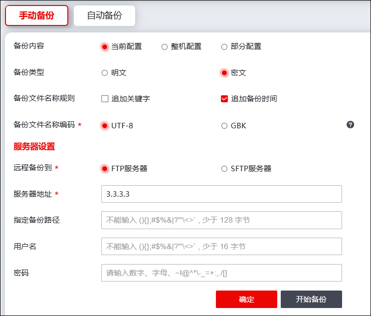
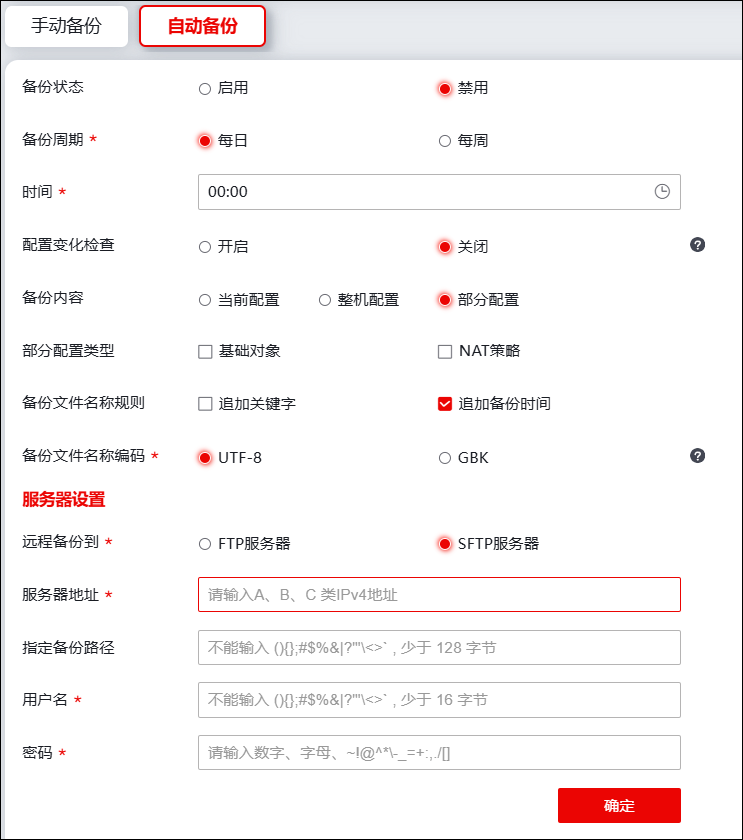

NGFW支持通过手动或自动的方式备份配置文件到FTP服务器、SFTP服务器。
l手动备份
| 步骤1 | 选择 > 配置 > ，激活“手动备份”，如下图所示。 |

在添加手动备份时，各项参数的具体说明如下表所示。
参数 |
说明 |
|---|---|
备份内容 |
备份内容可选择实时备份、整机备份或部分备份。 |
部分备份类型 |
备份内容选择“部分备份”时，需选择部分备份的类型，可选择基础对象（即 资源管理 章节的地址、服务、区域、地区、域名、应用和时间 对象）和NAT策略。 |
备份类型 |
选择备份文件传输的类型。可选择明文或密文。 |
备份文件名称规则 |
设置备份文件名称规则，可添加备份时间和关键字。 |
备份文件名称编码 |
设置备份文件名称编码。 说明： 需根据远程服务器系统类型进行配置,通常Linux系统默认编码格式为UTF-8,Windows系统默认编码格式为GBK。编码格式不匹配,会导致生成的文件名称显示乱码。 |
远程备份到 |
选择配置文件备份的服务器。可选择FTP服务器、SFTP服务器。 |
服务器地址 |
设置备份服务器的地址。 |
指定备份路径 |
设置备份配置文件在该服务器的指定备份路径。 |
用户名 |
设置服务器的登录用户名称。 |
密码 |
设置服务器登录密码。 |
| 步骤2 | 配置完成后，点击【确定】保存当前配置，点击【开始备份】则开始进行配置文件备份。 |
l自动备份
| 步骤1 | 选择 > 配置 > ，激活“自动备份”，如下图所示。 |

在添加自动备份时，各项参数的具体说明如下表所示。
参数 |
说明 |
|---|---|
备份状态 |
选择是否开启配置文件自动备份功能。 |
备份周期 |
设置配置文件自动备份周期。可选择每日或每周自动备份。 |
生效时间 |
备份周期选择“每周”时，设置每周的生效时间，可选择星期一至星期日的任意一天。 |
时间 |
设置自动备份时间信息。 |
配置变化检测 |
选择是否开启配置变化检查功能。 如开启配置变化检查，只有配置发生变化才会按照备份周期进行备份，否则不进行备份。如关闭配置变化检查，无论配置是否发生变化，都会按照备份周期进行备份。 |
备份内容 |
备份内容可选择实时备份、整机备份或部分备份。 |
部分备份类型 |
备份内容选择“部分备份”时，需选择部分备份的类型，可选择基层对象（即 资源管理 章节的地址、服务、区域、地区、域名、应用和时间 对象）和NAT策略。 |
备份类型 |
选择备份文件传输的类型。可选择明文或密文。 |
备份文件名称规则 |
设置备份文件名称规则，可添加备份时间和关键字。 |
备份文件名称编码 |
设置备份文件名称编码。 说明： 需根据远程服务器系统类型进行配置,通常Linux系统默认编码格式为UTF-8,Windows系统默认编码格式为GBK。编码格式不匹配,会导致生成的文件名称显示乱码。 |
远程备份到 |
选择配置文件备份的服务器。可选择FTP服务器、SFTP服务器。 |
服务器地址 |
设置备份服务器的地址。 |
指定备份路径 |
设置备份配置文件在该服务器的指定备份路径。 |
用户名 |
设置服务器的登录用户名称。 |
密码 |
设置服务器登录密码。 |
| 步骤2 | 配置完成后，点击【确定】保存自动备份配置。 |